Technique d’entretien des parties prenantes internes et externes s’appuyant sur des questions ouvertes pour recueillir différents points de vue sur l’avenir et ce à quoi il pourrait ressembler.
À employer aux premiers stades de l’élaboration d’une stratégie pour recueillir des informations sur l’avenir auprès de différentes parties prenantes.
Cette technique rend le processus de collecte plus robuste en facilitant l’émergence d’informations et de points de vue que vous n’aviez pas encore envisagés. Elle sert également à s’assurer que la direction prise pour l’élaboration de la stratégie est la bonne.
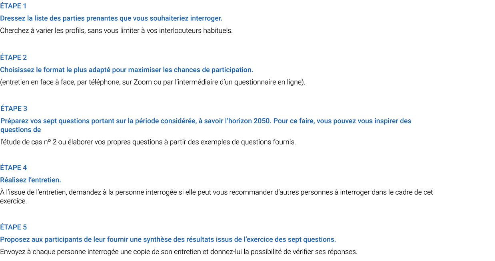


 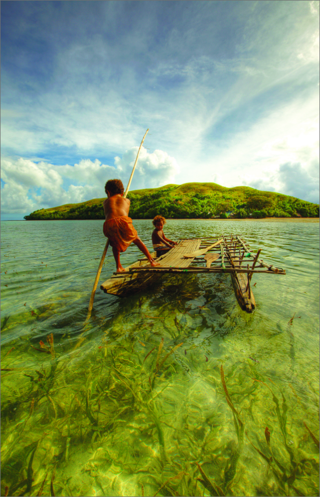
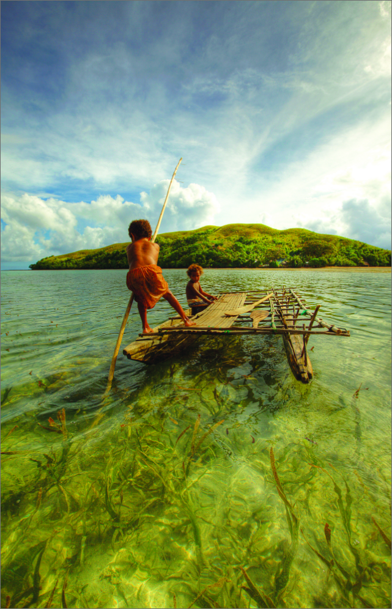


 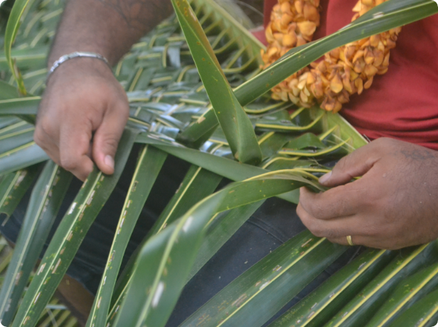
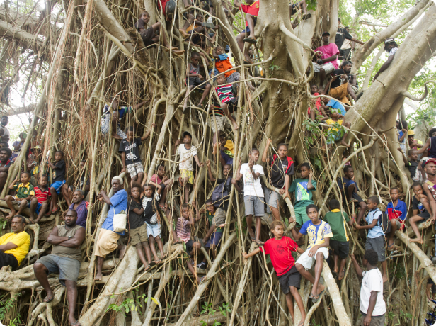
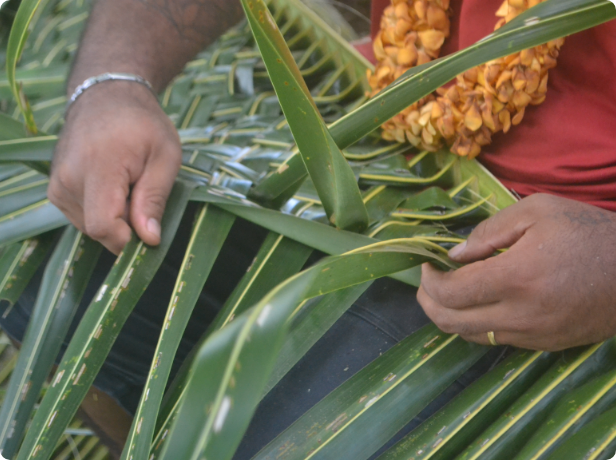
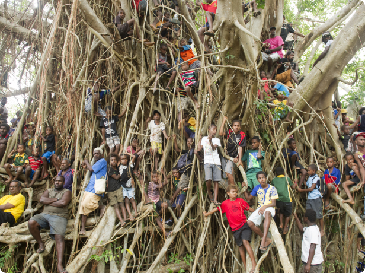


 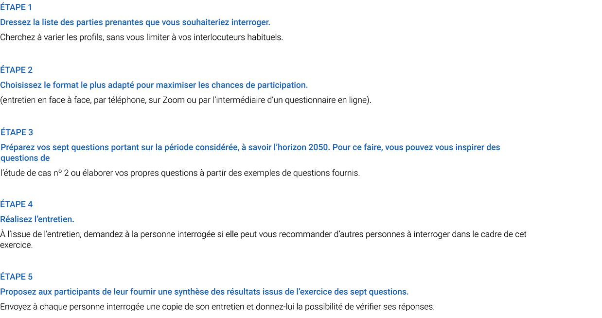
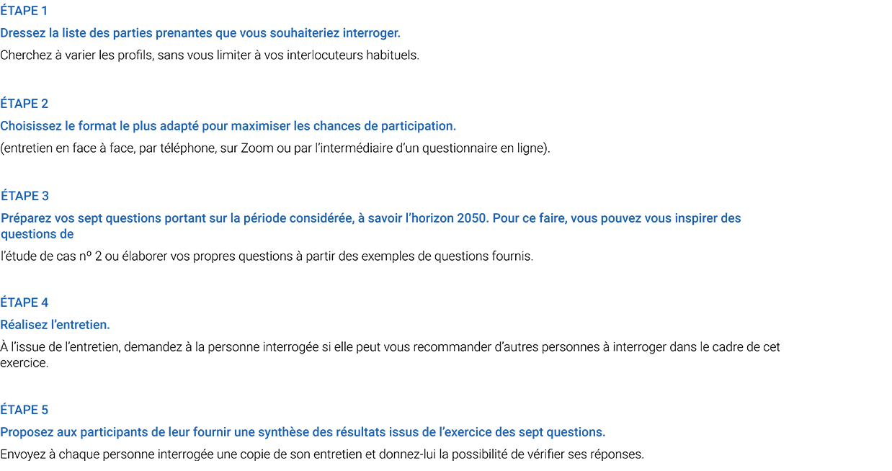


 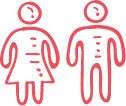
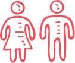